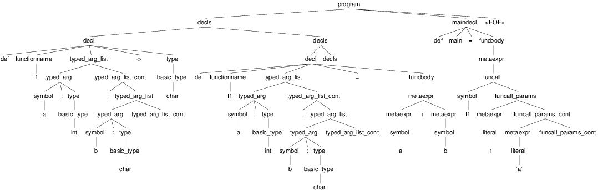

Linguagem MMML
Entrada:
Resultado:
Entradas e Árvores de Análise
Exemplo 1
def main = 1

Exemplo 2
def main = "uma \"\nstring"

Exemplo 3
def main = 0xabfe
Exemplo 4: Funções
def f1 a : int, b : char -> int def f1 a : int, b : char = a + b def main = f1 1 'a'

Exemplo 5: if
def main = if x == y then x - y else x + y

Exemplo 6: let
def main = let x = 1, y = 2 in x + y
Exemplo 7 : expressões booleanas
def main = if x + 1 == 2 && x - 1 == 0 || y then "correto" else "wtf"

Exemplo 8 : Chamada de Função
def main = funcao1 a + b c + 2 y

Exemplo 9 : Chamada de Função 2
def main = funcao1 a + b c (funcao2 a b)
A Linguagem Micro Mini ML
\mml é uma linguagem da família ML (F#, OCaML, Nemerle, dentre outras). Ela é uma linguagem funcional pura – isto é, cada variável é atribuída uma única vez, não sendo permitidas alterações posteriores. Iterações devem ser feitas utilizando recursão.
A gramática da linguagem é fornecida juntamente com este documento. A gramática pode ser livremente alterada, desde que a linguagem reconhecida permaneça a mesma.
As próximas seções exemplificam os conceitos básicos da linguagem \mml.
Tipos Básicos
A linguagem possui os seguintes tipos básicos:
bool– um booleanochar– um caractereint– um inteiro de 32 bitsfloat– um número de ponto flutuante de 64 bits- Sequências: – Um tipo básico, seguido de
[]:int[]– sequência de intschar[]– sequência de caracteres (i.e. string)float[][]– sequência de sequência de floats (array bi-dimensional)
Literais
A linguagem suporta os seguintes literais em seu código:
- Literais Booleanos:
trueefalse
- Literais Inteiros:
- Números decimais com ou sem sinal (
123,-123,+123) - Números Hexadecimais positivos (
0x123,0xaf123) - Números Binários positivos (
10b,11101b)
- Números decimais com ou sem sinal (
- Literais Reais
- Números com ponto decimal (
123.01,-123.09) - Números com expoente (
123.01E11,123.09E-10)
- Números com ponto decimal (
- Literais String
- Sequências de caracteres entre aspas duplas (\texttt{"abc"})
- Caracteres com escape entre aspas ("abc\textbackslash{}noutralinha" )
- Literal Char:
- Um único caractere entre aspas simples (\texttt{'a'})
- Caracteres com escape entre aspas simples ('\textbackslash\textbackslash{}')
- Literal Expecial Nulo
- O literal
nil, que representa nenhum valor armazenado
- O literal
Expressões Booleanas
As seguintes expressões booleanas são aceitas na linguagem:
- Resultado nulo ou não nulo: Se o resultado de uma expressão armazena um valor, então a expressão é verdadeira. Caso o resultado for
nil, então a expressão será falsa. - Expressões entre parênteses
- Expressões negadas – Operador
! - Igualdade/Inigualdade: – Operadores
==e!= - Operador Lógico E –
&& - Operador Lógico OU –
||
A precedência de operadores segue o padrão esperado para linguagens como Java e C: Negação, Igualdade/Inigualdade, E/OU lógico, com parênteses para alterar a ordem de avaliação.
Exemplos:
a || b (a == b) || c // parenteses desnecessario a == (b || c) // parenteses necessario !(c == a) c // C é nao nulo? !c // C é nulo? !(a || b)
Expressões Aritméticas
As expressões aritméticas são as mesmas utilizadas nas etapas anteriores:
- Soma:
+ - Subtração:
- - Multiplicação:
* - Divisão:
/
A precedência de operadores garante que Exponenciação tem prioridade sobre Multiplicação e Divisão, que por sua vez têm prioridade sobre Soma e Subtração.
Exemplos:
a + 2 a * b * c / d (a + b) * 2
Condicional if
A estrutura if da linguagem tem a seguinte forma:
if boolexpr then expr1 else expr2
O comportamento é como esperado: Se a espressão boolexpr for verdadeira, é executado a primeira expresão; caso contrário, a segunda.
Uma diferença do if da \mml para o if de linguagens imperativas é que ele é uma expressão: o if retorna o resultado da expressão avaliada. Ou seja, o código
if x == 1 then 10 else 20
seria equivalente ao seguinte código em C:
int if_eval_1(int b, int r1, int r2) { if (b) return r1; else return r2; } ... r = if_eval_1(x == 1, 10, 20);
Uma vez que o if é, ele próprio, uma expressão, ele pode ser utilizado dentro de expressões booleanas ou aritméticas. A expresão:
(if x == 0 then 10 * x else 20 / x) * 2
retora \(10 * x * 2\) quando x é zero e \((20 / x) * 2\) quando x é diferente de zero.
Uma vez que a condição do if é uma expressão, podemos utilizar parênteses, igualdades, operadores lógicos, etc.
if (x == 0 || z) then if z then (z * 10 + 2) else (50) else 10
Observação: Em \mml, o else não é opcional. Se não há resultado a ser retornado quando a condição for falsa, então deve-se retornar um valor padrão – ou nil:
if x == 0 then x * 2 else nil
Declarações de Símbolos
A linguagem é \mml é uma linguagem funcional pura: uma vez que um valor é atribuído a um símbolo, este símbolo não pode ser alterado. Uma ``variável'' em \mml, portanto, não é variável – é como uma declaração de constante.
A declaração de símbolos é feita com a primitiva let:
let x = 1 * 2 + y in x * 2 ^ 10
A primitiva let pode declarar vários símbolos. Para isso, deve-se utilizar vírgula:
let x = 1, y = x + 2, z = x * y in y + 1 + z
Um símbolo declarado sempre deve receber um valor resultante de uma expressão. Uma vez que um if é uma expressão, ele pode ser utilizado no lado direito da igualdade durante um let:
let x = if z && t then z * t // ambos verdade, pode multiplicar else if z then z * 10 // apenas z else if t then t * 10 // apenas t else nil // nenhum in if x then x * 100 // x nao recebeu nil else nil // x recebeu nil
Assim como o if, o let é, também, uma expressão e, portanto, retorna valor:
if (let x = 100 in x * x * x * x) == 100 then false // 100^4 eh 100 ?! nunca deveria retornar false else true // sempre deveria retrnar true
O escopo de qualquer símbolo está restrito à expressão associada ao in do let. O seguinte trecho de código deveria retornar \(38\):
let x = 10 in // na proxima expressao, x eh 10 x + (let x = 20 in // na proxima expressao, x eh 20 x - 2 // Aqui x vale 20, 20 - 2 = 18 ) + x // aqui x ainda eh 10
A seguinte expressão retorna 20:
let x = 10 in let x = 20 in x
Chamadas de Função
Para invocar uma função em \mml, deve-se utilizar o nome da função seguido de seus parâmetros. O código a seguir chama a função funct com os parâmetros a, b e c.
funct a b c
Parâmetros de uma função podem ser resultado de expressões. O seguinte código chama a função funct com os parâmetros \(x + 1\), \(x - 2\) e \(x * 2\):
funct x + 1 x - 2 x * 2
Uma vez que os parâmetros são expressões, pode-se utilizar parênteses para isolá-los no código:
funct ( x + 1 ) ( x - 2 ) ( x ^ 2 )
Esta sintáxe de chamada de função pode introduzir ambiguidades: O seguinte código poderia ser interpretado como a chamada da função print_results com 3 parâmetros ou como a chamada da função print_results com 2 parâmetros, um deles o resultado da função funct ou com apenas um resultado.
print_results funct 1 2 //[1] print_results (funct) (1) (2) // ou //[2] print_results (funct 1) (2) // ou //[3] print_results (funct 1 2)
Esta ambiguidade deve ser resolvida para o primeiro caso (i.e. print_results com 3 parâmetros). Para expressar qualquer outra alternativa, o programa deve incluir os parênteses adequadamente.
A sintaxe da chamada de função também fica ambígua no caso de funções que não esperam nenhum parâmetro. A função read_int, que lê um inteiro da entrada, não precisa de nenhum parâmetro. Nesse caso, deve-se utilizar o símbolo especial _ (underscore) que indica ``nenhum parâmetro'':
read_int _
A chamada de uma função também é uma expressão. Assim, podemos atribuir os resultados de uma função a símbolos e utilizar os resultados dentro de expressões:
let x = read_int _, y = funct x in print_results y + (do_something x)
if funct (if x == 0 then 10 else 20) then 10 else 20
Declaração de Funções
Uma função na linguagem \mml é declarada com a primitiva def:
def print_results r : int = print_str (concat "Resultado: " (str r))
Pode-se declara um cabeçalho para a função para definir claramente qual o tipo de retorno:
def print_results r -> int
Os parâmetros de uma função devem sempre possuir tipos definidos após o símbolo :. Uma função não possui a palavra chave returns. O retorno é sempre o resultado de uma expressão – e o tipo de retorno de uma função é definido pelo resultado da expressão.
// media 1 devolve a media de 3. O tipo de retorno eh int def media1 a : int, b : int, c : int = (a + b + c) / 3 // resultado da divisao eh float, entao media2 devolve float def media2 a : int, b : int, c : int = (a + b + c) / 3.0
O corpo de uma função é sempre uma expressão. Assim, pode-se utilizar if e let dentro de uma função:
def max2int a : int, b : int = if (a > b) then a else b
Toda função retorna algum valor. Uma função chamada print, por exemplo, pode retornar um valor inteiro indicando quantos símbolos foram colocados na tela.
Quando o valor de uma função não necessitar ser armazenado, pode-se, no let, utilizar o símbolo especial _:
let x = read_int _, _ = print_int x + 1 // ignora o resultado de print in x * 10
Tipos Sequência
Um tipo sequência em \mml é equivalente a um vetor ou uma lista em outras linguagens. Toda sequência possui tamanho definido. Uma função especial chamada length é responsável por indicar quantos elementos existem na sequência.
Uma sequência é criada utilizando o operador []:
let s1 = [1], // sequencia de 1 elemento s2 = [ read_int _ ], // 1 elemento, lido da entrada s3 = nil // lista vazia in (length s1) + // retorna 1 + (length s2) + // 1 + (length s3) // 0
Sequências podem ser concatenadas utilizando o operador ::
let s1 = [1], s2 = [2], s3 = [3], s4 = nil, c1 = s1 :: s2, // [1, 2] c2 = s3 :: s4, // [3] :: nil = [3] c3 = c1 :: c2 // [1, 2] :: [3] = [1, 2, 3] in length c3 // retorna 3
Uma sequência sempre pode ser quebrada em um início, seguido do resto da lista. A sequência [1, 2, 3] pode ser considerada como o início \(1\), seguido da lista [2, 3]. Uma expressão let permite quebrar a lista em seu início e seu resto com o operador ::
let seq = [1] :: [2] :: [3], h::rest = seq // quebra seq em um inicio chamado h // e uma continuacao chamada rest in h == 1 && (length rest) == 2 // sempre devolve true
Uma lista de de um ou menos elementos sempre produzirá um resto nulo. A função abaixo utiliza isso para calcular o tamanho de uma sequência de inteiros:
def len_int_seq__ count : int, s : int[] = if !s // ! ( s != nil ) then count // nada mais para contar else let h::t = s in len_int_seq__ (count + 1) t def len_int_seq s : int[] = len_int_seq__ 0 s
O seguinte código retorna uma lista com todos os elementos da sequencia maiores que 10:
def filter_gt_10__ ret : int[], s : int [] = if !s then ret // nada mais, retorna ret else let h::t = s // quebra em inicio e resto in if h > 10 // maior que 10? then filter_gt_10__ (ret :: [h] ) t // chama recursivo, incluindo o // inicio no resultado else filter_gt_10__ ret t // chama recursivo, ignora o inicio def filter_gt_10 s : int[] = filter_gt_10__ [] s
Observação: Uma string na linguagem \mml deve se comportar como uma sequência. Isto é, \mint{fsharp}{h::t = "lala"} deve quebrar a string no caracter 'l' e a string "ala".
Conversão entre Tipos
Quando for necessário converter um tipo primitivo para outro tipo primitivo, devemos usar uma operação de cast. Em \mml, um cast funciona como uma chamada de função cujo nome é o tipo destino. \mint{fsharp}{int 0.2} converte para inteiro o valor em ponto flutuante 0.2 .
let x = int y in x * 10
A conversão de tipos pode ser útil quando queremos forçar um retorno de função para um tipo específico:
def avg2 a : int, b : int, round : bool = if round then float ((a + b) / 2) // calcula (a+b)/2, que eh int, mas devolve como float else (a + b) / 2.0 // calcula (a+b)/2.0, float
def sum__ res : int , seq : int[] = if !seq then res else let h::t = seq in sum__ (res + h) t def sum seq : int [] = sum__ 0 seq def avg_seq seq : int[] = let n = length seq, // int s = sum seq // int in s / (float n) // devolve uma soma inteira // dividida por um float // -> retorna float
As seguintes conversões de tipos são aceitas na linguagem \mml:
| Tipo Origem | Tipo Destino | Obs | |
|---|---|---|---|
| Inteiro | Float | ✓ | Número em ponto flutuante com 0s depois da vírgula (1 → 1.0) |
| Float | Inteiro | ✓ | Número inteiro descartando a parte fracionária. Pode perder precisão (1.9 → 1). Compilador deve alertar (Warning) |
| Inteiro | String | ✓ | Representa o número como uma string |
| Float | String | ✓ | Representa o número como uma string |
| String | Float | ✓ | Converte a string para Float |
| String | Int | ✓ | Converte a string para um inteiro. Aceita apenas strings em base 10. |
| Char | Int | ✓ | Devolve o número da tabela ASCII correspondente ao caractere |
| Int | Char | ✓ | Devolve o caractere associado ao valor da tabela ASCII |
| Char | Str | ✓ | Converte uma letra para uma string de um único caractere |
| Qualquer | Booleano | ✓ | false se nulo; true caso contrário |
let s = "101010", i = int s, // converte para um inteiro, base 10 c = 'a', c_ascii = int c, // 97 c2 = char 98 // 'b' in ( str i ) :: (str c2) // "101010" :: "b" -> "101010b"
Aritmética de Tipos na linguagem \mml
O único lugar em que tipos são definidos na linguagem \mml é na definição de parâmetros de função. Portanto, os tipos de símbolos em \mml são sempre derivados da expressão, em função dos tipos nos parâmetros de uma função.
Torna-se necessário, portanto, inferir, a partir das operações básicas da linguagem e dos tipos dos operandos, quais os serão os tipos resultantes.
Na linguagem \mml, os operadores aritméticos devem respeitar a seguinte aritmética de tipos
| Lado Esquerdo | (Operadores) | Lado Direito | Resultado | |
|---|---|---|---|---|
| Inteiro | + - / * | Inteiro | → | Inteiro |
| Inteiro | + - / * | Float | → | Float |
| Float | + - / * | Inteiro | → | Float |
| Inteiro | ^ | Inteiro | → | Float |
| Inteiro | ^ | Float | → | Float |
| Float | ^ | Inteiro | → | Float |
| Float | + - / * ^ | Float | → | Float |
O operador :: possui dois usos: concatenar sequências de mesmo tipo e concatenar strings:
| Lado Esquerdo | (Operadores) | Lado Direito | Resultado | |
|---|---|---|---|---|
| String | :: | String | → | String |
| int[] | :: | int[] | → | int[] |
| int[][] | :: | int[][] | → | int[][] |
| int[][][] | :: | int[][][] | → | int[][][] |
| … | … | … | ||
| float[] | :: | float[] | → | float[] |
| int[] | :: | float[] | → | ERRO |
| int[] | :: | int[][] | → | ERRO |
| String | :: | int[] | → | ERRO |
Concatenação de strings com números é considerado erro. O número deve ser convertido para string.
Todas as operações booleanas devolvem tipo bool. É importante lembrar que uma expressão que devolve int ou float pode ser considerada uma expressão booleana também – sendo falsa se seu resultado é nil e verdadeira, caso contrário.
| Lado Esquerdo | Operadores | Lado Direito | Resultado | |
|---|---|---|---|---|
| Float/Int/String/Sequência | && | Float/Int/String/Sequência | → | true, ambos guardam algum valor |
| Float/Int/String/Sequência | && | Float/Int/String/Sequência | → | false, algum deles é nil |
| Float/Int/String/Sequência | || | Float/Int/String/Sequência | → | true, algum dos lados guarda valor |
| Float/Int/String/Sequência | || | Float/Int/String/Sequência | → | false, ambos são nil |
| Bool | && | Bool | → | true, ambos são verdadeiros |
| Bool | && | Bool | → | false, um dos dois é falso |
| Bool | || | Bool | → | true, um dos dois é verdadeiro |
| Bool | || | Bool | → | false, um dos dois é falso |
| ! | Float/Int/String/Sequência | → | true, lado direito não armazena valor | |
| ! | Float/Int/String/Sequência | → | false, lado direito armazena valor |
Em uma expressão booleana, pode-se considerar que qualquer símbolo que armazene algo não-nulo é equivalente a true.
Coerção de Tipos
Quando um tipo inteiro for passado como parâmetro para uma função que espera um float este tipo pode ser convertido automaticamente para float, sem que o usuário do compilador solicite a conversão explicitamente. Isso se chama coerção de tipos. As seguintes coerções de tipos são válidas:
| Integer | → | Float |
| Char | → | Integer |
| Char | → | Float |
| Qualquer | → | Booleano |
O seguinte código deve, portanto, funcionar corretamente:
def media a : float, b : float = (a + b) / 2 // (float + float) / int = float / int = float def funct = let x = read_int _, y = 'z' in media x y // x eh coagido para float , y eh coagido para float
Observação: A coerção deve acontecer durante a chamada de funções. Durante avaliação de expressões, as coerções não devem ser feitas. O seguinte código deve falhar:
let x = 'a' + 2 // não pode coagir 'a' para int, // deve fazer o cast explicito // x = (int 'a') + 2 , se quer um int // ou // x = char ( (int a) + 2 ) se quer um char in ...
Um Programa em \mml
Um programa em \mml deve possuir uma função chamada main que não recebe nenhum parâmetro. A execução do programa se inicia por esta função:
def fib x : int = if x <= 0 then nil // 0 nao eh valido else if x == 1 then 1 else if x == 2 then 1 else (fib x - 1) + (fib x - 2) def main = let _ = print_str "Digite um numero : ", n = read_int _ , fib_n = fib n in if !fib_n then let _ = print "Numero invalido para fibbonaci\n" in nil else let _ = print ("Fib de " :: (str n) :: " eh " :: (str fib_n) in nil